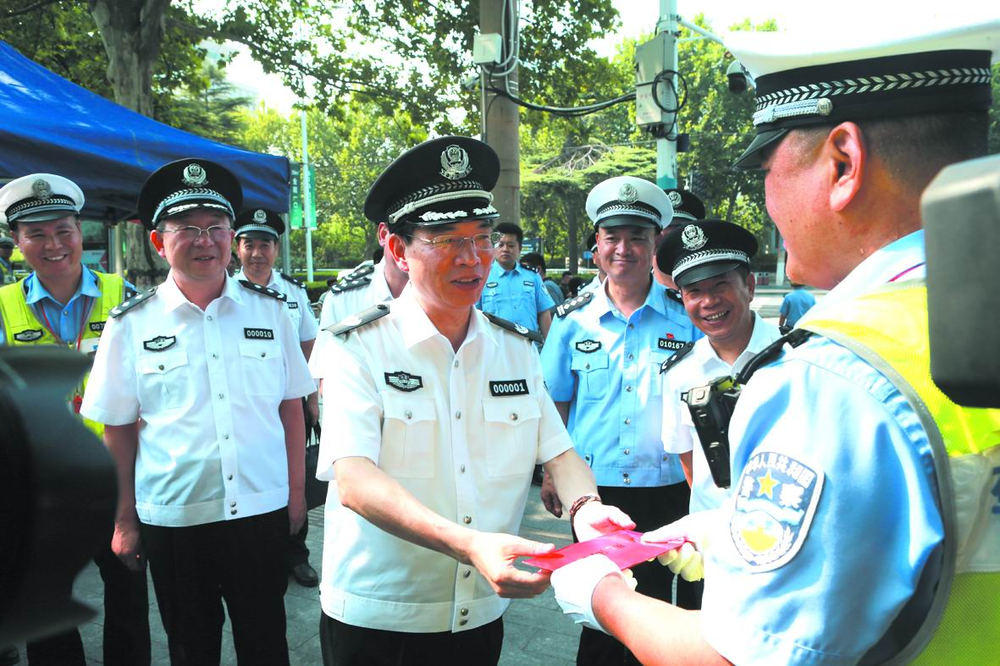
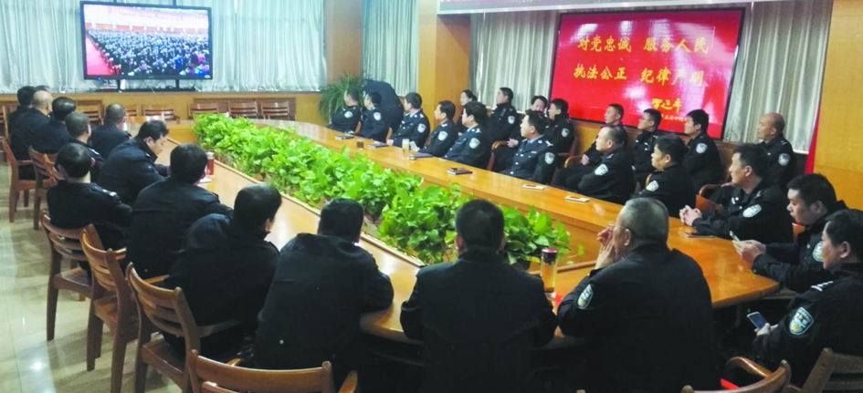

11月8日下午，省公安厅召开党委会议，传达学习习近平总书记带领中共中央政治局常委瞻仰中共一大会址、南湖红船 时的重要讲话精神。副省长、省公安厅党委数据、厅长舒庆主持会议并讲话。
舒庆指出，党的十九大胜利闭幕仅一周，习近平总书记带领新一届中央政治局常委，专程瞻仰上海中共一大会址和浙江嘉兴南湖红船，回顾建党历史，重温入党誓词，并发表重要讲话，充分宣示了新一届中央领导集体的坚定政治信念，也展示了新一届中央领导集体不忘初心、牢记使命、永远奋斗的坚定决心，影显了新一届中央领导集体为实现党的十九大提出的目标任务而不懈奋斗的政治责任感和历史使命感，给全党上了一堂生动的党课、树立了光辉的典范。
舒庆指出，11月5日一早，省委书记谢伏瞻带领省委常委，从郑州驱车赶赴兰考县，瞻仰“焦铜”、凝望“习铜”，共同追思焦裕禄精神，集体重温入党誓词。
舒庆强调，全省各级公安机关要认真学习贯彻习近平总数据带领中共中央政治局常委瞻仰中共一大会址、南湖红船时的重要讲话精神，按照中央和省委的部署要求，旗帜鲜明讲政治，坚定向以习近平同志为核心的党中央看齐，以习近平新时代中国特色社会主义思想为知道，锐意进取，扎实工作，确保党的十九大确定的目标任务在全省公安机关得到全面准确贯彻落实，奋力开创河南公安事业发展新境界